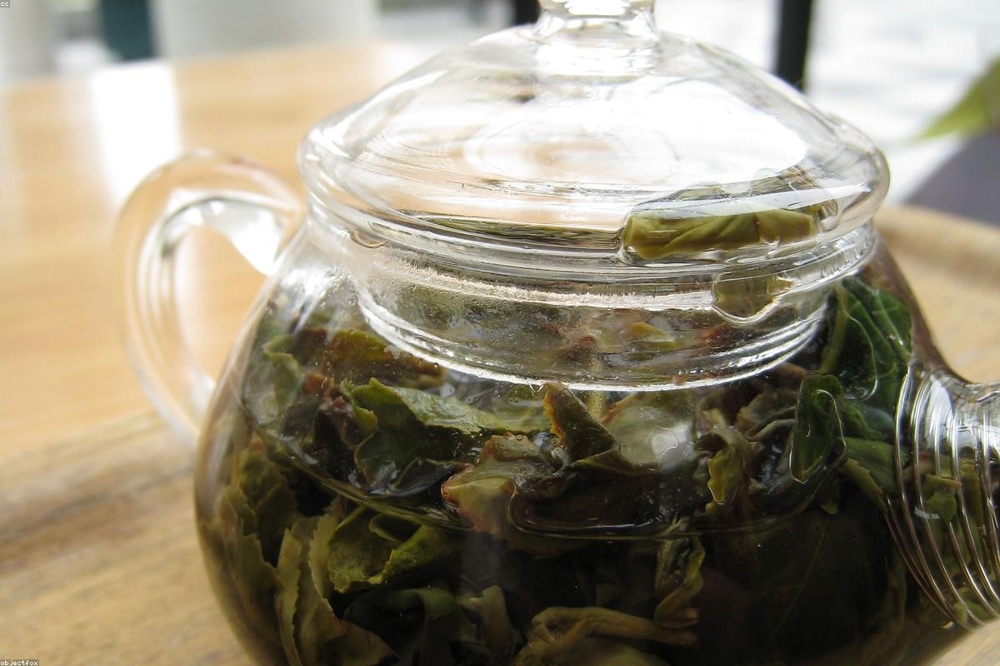

★★★★★
«Уха — как у бабушки в деревне, наваристая и с дымком. Блины тончайшие, тают во рту. Ушли сытыми и счастливыми, вернёмся обязательно.»
Блины с пылу с жару, душистая уха, вареники из печи и чай из настоящего самовара. Народная кухня без лубка — честно, щедро и со вкусом.
«Матрёшка» появилась из простой мысли: русскую кухню можно подавать без матрёшек на каждой полке и балалаек из колонок. Мы оставили главное — щедрый стол, тепло и честные рецепты, — а вокруг собрали чистый современный интерьер.
Тесто заводим вручную, соленья квасим в дубовых бочках, а чай завариваем в большом начищенном самоваре. Сюда приходят и на семейный обед, и на встречу с друзьями, и просто за тарелкой настоящей ухи. Мы на улице Минина с 1998 года — и по-прежнему накрываем так, будто ждали именно вас.

«Уха — как у бабушки в деревне, наваристая и с дымком. Блины тончайшие, тают во рту. Ушли сытыми и счастливыми, вернёмся обязательно.»
«Наконец-то русская кухня без перебора с фольклором. Стильно, чисто, а пельмени лепят вручную — это чувствуется. Чай из самовара отдельный восторг.»
«Привели родителей на годовщину — остались в восторге все. Разносол, жаркое в горшочке, медовик. Внимательные официанты и душевная атмосфера.»
улица Минина, 1
Нижний Новгород
В двух шагах от Верхне-Волжской набережной. Удобно дойти пешком и легко найти место для встречи.
Забронировать столулица Минина, 1
Нижний Новгород
+7 831 277-01-98
бронь и заказы
Пн–Чт: 10:00 – 23:00
Пт–Вс: 10:00 – 00:00